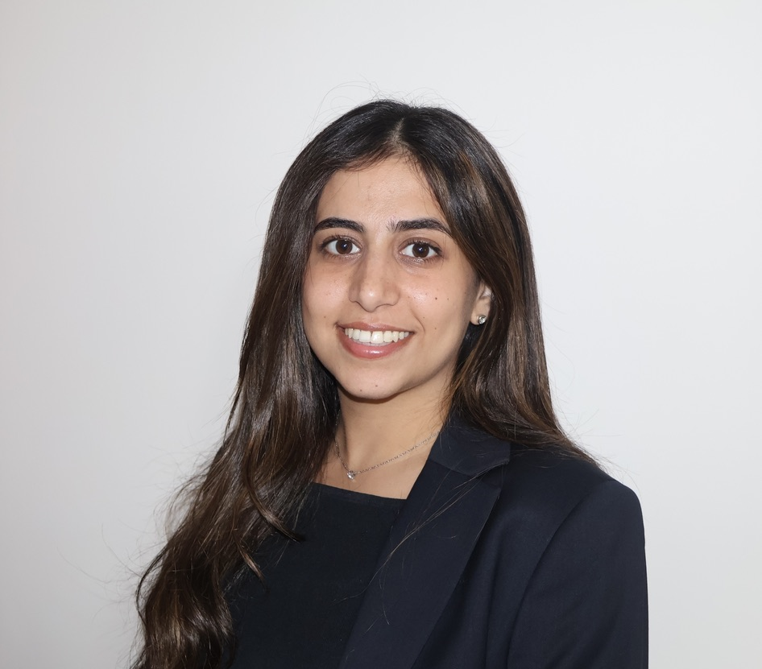

Demystifying the Attribution Ambiguity: A Computational Framework of Agency in Human-GenAI Innovation
Rawan Qadri, Inbal Yahav, Moran Lazar, and Hila Lifshitz
ACADEMIC PROFILE
PhD Student, Information Systems
Coller School of Management · Tel Aviv University
My research examines computational methodologies for modeling dynamic interactions in digital systems. Particularly, it focuses on how information, preferences, and decisions are structured across participants and evolve throughout the course of interaction. I develop and apply reasoning-based analytical approaches that combine data science, statistical modeling, and Natural Language Inference to capture the dependencies and mechanisms underlying these interactions.
My research spans several domains, including recommender systems, innovation and creativity, agent-based simulation, and multi-agent systems.

RESEARCH
Rawan Qadri, Inbal Yahav, Moran Lazar, and Hila Lifshitz
Rawan Qadri, Moshe Unger, and Inbal Yahav
Awarded ILAIS Ein-Dor Student Prize, 2026
Rawan Qadri
Moran Lazar, Hila Lifshitz, Rawan Qadri, Inbal Yahav, and Karim Lakhani
EDUCATION
Python for Statistical Analysis — M.Sc. program (2024–2026)
Recommendation Systems — M.Sc. program (2025)
Introduction to Data Science for Business — B.Sc. program (2026)
GET IN TOUCH